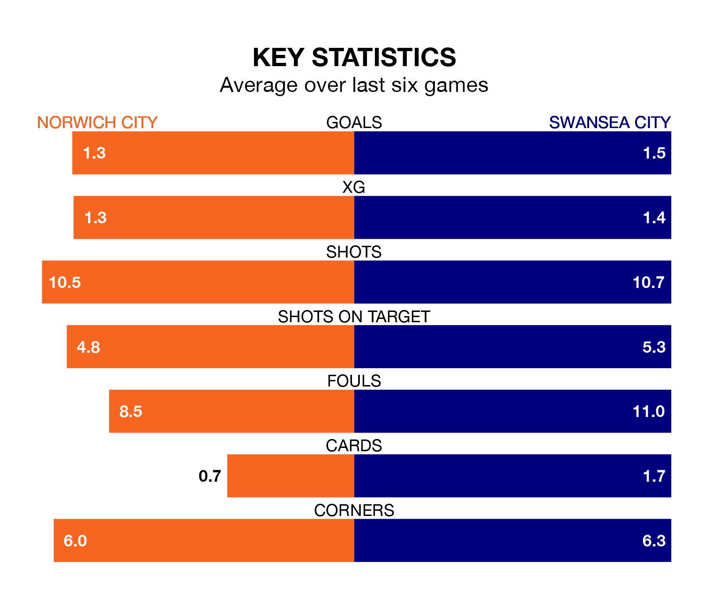

Norwich City are heavy favourites to keep all three points at home in Saturday's kick-off against Swansea City.
The Canaries, who sit sixth in EFL Championship with 44 games played, are priced at 1.6 to seal victory at Carrow Road.
Sitting eight places and 16 points behind them in the table, Swansea are 4.2 to win with *Betting Company*, while the draw is at 3.8.
With 77 goals in 44 games so far this season, Norwich are scoring more than average in the league with 1.8 goals per game. But they are conceding more than average too, letting in 61 goals at a rate of 1.4 per game.
Swansea, meanwhile, are average scorers, with 1.3 goals per game. They have conceded 1.4 goals per game.
In the last 10 years, Norwich and Swansea have played each other on nine occasions. Norwich won five of them and Swansea four.
On average, the Canaries scored 1.0 goal and the Swans 1.0 in those matches.
Their last meeting was on October 4, when Swansea won 2-1 at home.
In Joshua Sargent, Norwich City have one of the league's sharpest shooters so far this season. He has notched 15 goals in 24 appearances, to sit sixth in the scoring charts.
His goal rate of one every 113 minutes is quicker than that of Joël Piroe, Swansea City's top scorer with a goal every 218 minutes, and a total of 12 goals in 43 games.
The Canaries are in reasonable form in EFL Championship, with three wins and two draws from their last six games.
With three wins and a draw over that period, the Swans' form is slightly worse – they have taken 10 points from 18, compared to the home team's 11.
Norwich's last match was on April 20, a 1-1 draw against Bristol City, with Borja Sainz Eguskiza getting the goal for the Canaries.
Swansea beat Huddersfield Town 4-0 last time out, also on April 20, with Jamal Lowe, Jerry Yates, Liam Walsh and Ronald Pereira Martins on the scoresheet.
Updated: 07:59 (UTC), 26/04/24